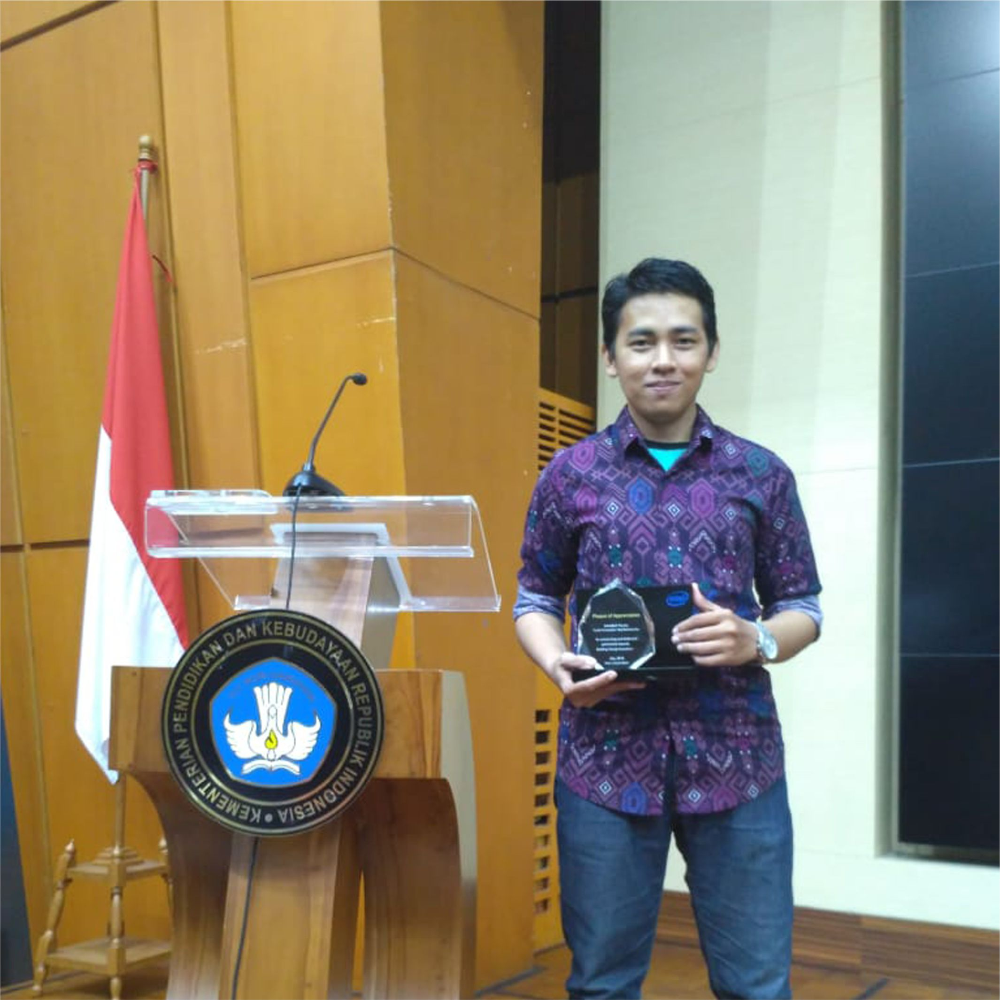
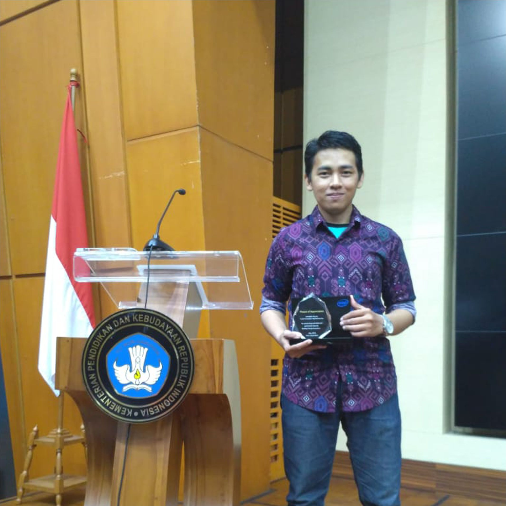
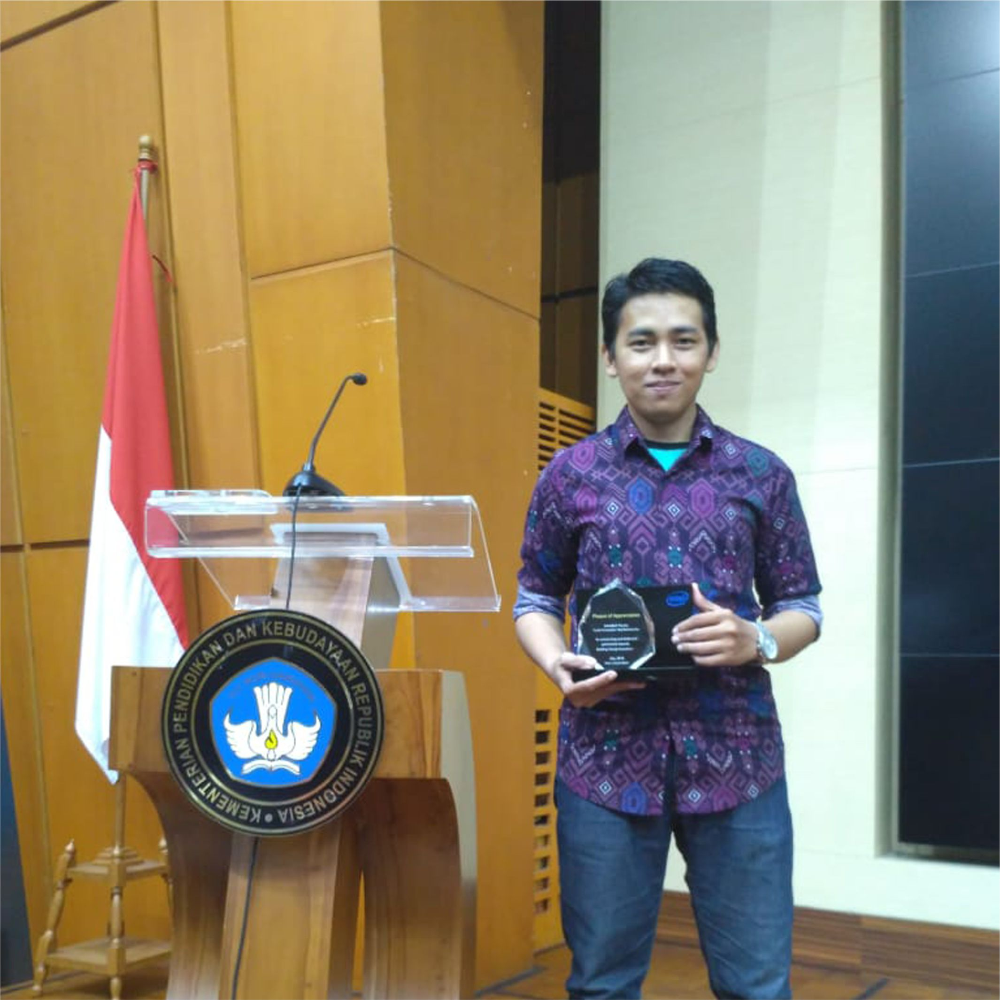

Hello, I am 👋
Ardiansyah
Seorang Freelance IT Support and Developer Web. Berpengalaman di bidang IT Support selama 6 tahun dalam melakukan maintenance dan troubleshooting hardware/ software pc, perencanaan spesifikasi sesuai kebutuhan pc/ laptop user hingga siap pakai, mengamankan dari malware dan virus, memahami konsep jaringan LAN dan pembuatan website menggunakan CMS.


Intel Innovation Day
Awards 2018
Perkenalkan, saya Ardiansyah - lulusan S1 Teknik Informatika di perguruan tinggi STMIK AKBA (sekarang Universitas Teknologi Akba). Mulai menggeluti bidang IT Support sembari menyelesaikan studi pendidikan saya. Selain dibidang IT Support, saya juga mampu mengoperasikan berbagai Aplikasi Office, Aplikasi Desain CorelDraw, Pembuatan Website menggunakan Wordpress & PHP Native.
Sebagai Freelancer IT Support, saya telah banyak membantu client dalam melakukan maintenance dan install ulang sistem operasi, scan virus, recovery data, jaringan LAN, troubleshooting terkait kerusakan unit dan merekomendasikan upgrade software/ perangkat dalam pembelian unit laptop atau PC sesuai kebutuhan pemakaian. Saat ini, saya juga sedang berproses untuk menjadi Fullstack Developer React.
0
PROJECT COMPLETED
0
AWARDS
0
YEARS EXPERIENCE
0
HAPPY CLIENTS
PERSONAL INFO
Tentang Saya.
Seorang Freelance yang memiliki pengalaman dibidang IT Support selama 6 tahun dalam melakukan maintenance dan troubleshooting hardware/ software.
Pendidikan
Pengalaman Kerja
Pengalaman kerja yang saya miliki.
Freelance & Data Entry
Freelance IT Support / 2025 - present
- Install Sistem Operasi PC/ Laptop Client
- Maintenance System, Scanning virus
- Troubleshooting Hardware/ Software PC/ Laptop
- Repair file system, backup data
- Konsultasi permasalahan komputer offline/ via remote
- Project Staff PT. PNM Jakarta: Data Entry, verifikasi data client asuransi via remote.
PT. Solusi Agensi Syariah
IT Support / 2021 - 2024
- Sharing Printer
- Maintenance dan troubleshooting networking pc di kantor pusat dan pabrik
- Memastikan komputer staff bekerja dengan baik hingga siap digunakan.
- Maintenance dan pemeliharaan PC setiap akhir bulan.
- Membuat dan mengelola website perusahaan menggunakan CMS.
- Mendesain spanduk kegiatan
- Mengelola online shop dan konten feeds promosi di sosial media.
Educare Makassar - Contract
IT Support / 2019
- Membuat landscape peserta ujian online
- Input data excel
- Memberi arahan alur ujian nasional SMA (Costumer Service)
- Scan offline lembar hasil ujian nasional
- Membuat laporan
PT. Inixindo Magguru Macca Cemerlang - contract
IT Support / 2018
- Troubleshooting hardware/ software pc sebelum digunakan peserta sertifikasi IT
- Maintenance dan membuat laporan akhir penggunaan perangkat
Kemampuan
Kemampuan soft skills dan hard skills.
Tools
Microsoft Word, Excel, Power Point, Team Viewer, Google Workspace, Canva, CorelDraw
Hard Skills
Maintenance Sistem Operasi, Troubleshooting PC/ Laptop, LAN Networking, Web CMS Wordpress, IOT with Arduino
Soft Skills
Time Management, Detail-Oriented, Communication, Problem-Solving
Skill Bahasa
Bahasa Indonesia, Bahasa Inggris (Progress Learning)
DISCOVER MY CASES
Sarjana S1 Teknik Informatika
Universitas Teknologi Akba / 2014 - 2018
- Judul Skripsi "SMART PARKING MENGGUNAKAN ARDUINO UNO DENGAN SENSOR PROXIMITY DALAM MENENTUKAN AREA PARKIR KOSONG".
- Menampilkan judul skripsi pada pameran Innovation Day by Intel, bersama Youth Hub Bulukumba di Kementrian Pendidikan dan Kebudayaan, Jakarta Pusat.
Vocational High School
SMK Tri Tunggal 45 Makassar
Jurusan Teknik Komputer dan Jaringan